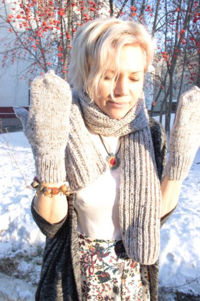

Ольга, которую большинство кемеровчан знает как Феодору Оцел, почти 4 года назад вместе со своим другом Михаилом Дорфом придумала антикафе «Кот да Винчи».
В антикафе «Кот да Винчи» всё бесплатно, кроме времени: первый час — 2 рубля за минуту, остальное время - 1 рубль за минуту
Вернее, формат антикафе (заведения, где платят за время) существовал уже давно, и даже в Кемерове у «Кота» нашлись подражатели, но именно «Кот да Винчи» спустя короткое время стал местом притяжения всей кемеровской культурной тусовки. Место «для своих», которое вряд ли получится создать ещё раз.
Чем ты зарабатываешь на жизнь сегодня?
Сегодня я зарабатываю на жизнь несколькими способами. два основных это культурно-просветительский проект «Кот да Винчи» и выступления скрипачки Феодоры. Также недавно созданный проект «Внутри и снаружи» оказался востребованным, слегка поддержал финансово, но через год надеюсь будет приносить доход, сравнимый со скрипачкой)
Во сколько лет ты впервые заработала деньги, как?
Первые деньги я заработала летом на сборе зелёного лука, мне было 11 лет. Надо было собирать лук, формировать в пучки и складывать в ящики. Нас было человек 20 таких дураков от школы. За две недели работы с девяти до трёх каждый получил 1 рубль 80 копеек. Сущая эксплуатация детского труда!
Изменилась ли структура твоих расходов за последние 2 года?
Практически нет. Хотя, что такое структура? Чуть меньше покупаю личных вещей, чуть больше уходит на продукты. Статья путешествий-развлечений уменьшилась, но разве нельзя назвать мои проекты и мероприятия развлечением?
Ты пробовала вести учёт своих денег, записывать расходы. Делаешь ли это сейчас?
Никогда не пробовала и не собираюсь. Во мне живёт внутренний цензор и бухгалтер. Я чувствую,что и где выходит из примерного бюджета на месяц.
Раз в год на меня находит потребность в дорогой косметике, духах, потом вдруг надо какие-то средства для волос, потом на маникюрные ножницы и пилочки потянуло, потом, допустим, каждый день театры и рестораны. А потом в какой-то момент просто чувствую — надо остановиться. То же самое с тканями, красивыми тряпочками. Но у меня нет ощущения, что сильно ограничиваю себя в чём-то. Если сильно хочется — почему нет? Притом, всегда знаю — если начинаются траты — значит и придёт заработок. Деньги это ж энергия, надо давать им движение и не копить на чёрный день.
И вообще считаю, что мозг лучше настраивать не на то «как и где сэкономить», а «как и где заработать»
Как относишься к кредитам, к кредитным картам?
Очень плохо я отношусь к кредитам. не хотелось бы этим пользоваться, чесслово. Я не понимаю людей, которые живут в долг, у которых постоянно что-то висит на душе в виде невыплаченных сумм. Бррр, это не про меня.
Сколько у тебя банковских карт, каких банков, почему?
У меня одна банковская карта Visa и мне её вполне хватает.
Есть ли необходимая тебе вещь, которую ты сегодня не можешь себе позволить?
Такой вещи нет. То,что я не могу себе позволить не является для меня ценностью, живу тем, что есть. Ну… хотелось бы слетать на неделю-другую в США в гости к подруге, в Канаду было бы интересно на джаз-фест… Но это не то, ради чего буду упираться и прям добиваться этого.
Какой ежемесячный доход тебе необходим для комфортной жизни сегодня?
Около 80 тыщ в месяц было бы комфортно. Много денег меня портят, я себя знаю, начну опять всякую дрянь покупать. Минималистичность во всём. И даже в музыке стиль минимализм меня вдохновляет.
Готовишься ли ты как-то к пенсии, в финансовом плане?
Вообще нет. На государство я точно не рассчитываю. Было бы здорово освоить что-то новое, например научиться вязать носки или готовить офигенную кабачковую икру.

Если говорить о деньгах, что бы ты пожелала себе 20-летней сегодня.
Я бы пожелала себе не думать о них всерьёз. всё равно это вещь эфемерная, как звук или цвет.
В принципе, мне мама и тогда говорила — занимайся на скрипке, занимайся на скрипке, не распыляйся, не прыгай с одного на другое. Занимайся на скрипке.
Жизнь показала, что заниматься чем-то одним мне неинтересно. Следовательно больших денег у меня никогда не будет. Ну и ладно.